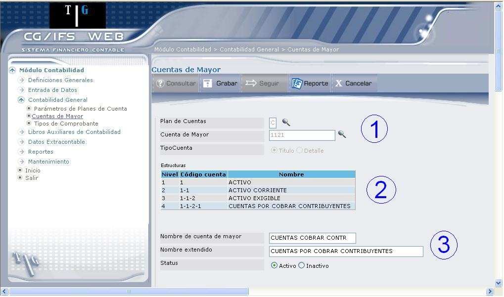
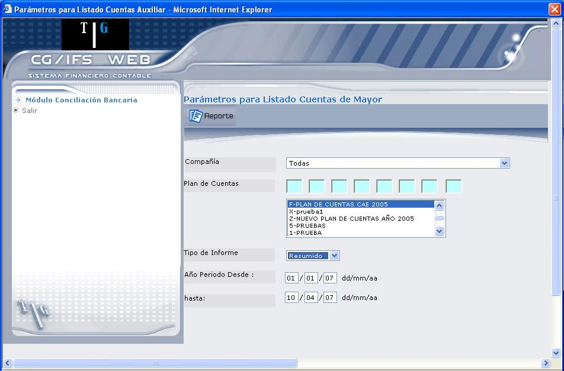
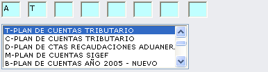
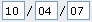
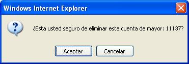

Actualización o Creación de Cuentas de Mayor de Título
El formato de actualización permite definir o modificar parámetros. Una vez que seleccione la cuenta de mayor, se despliega la estructura de la cuenta, como se muestra en 1.7. Esta pantalla se ha dividido en tres secciones.

Figura 1. Cuentas de Mayor – Estructura de de Mayor.
SECCIÓN 1:
Los campos Plan de Cuentas, Cuenta de Mayor y Tipo de Cuenta se muestran protegidos.
Para crear, una cuenta de mayor, debe haber ingresado el código de la cuenta de mayor y definido el tipo de cuenta.
SECCIÓN 2:
Despliega la estructura de la cuenta. Desde el primer nivel, hasta el nivel que corresponda a la cuenta seleccionada. En el ejemplo se puede observar que la cuenta seleccionada 1-1-2-1 corresponde al nivel 4.
La finalidad de esta sección es hacer una comprobación visual de que de Mayor es efectivamente la deseada y está colocada en el lugar preciso, dentro de la jerarquía del Plan de Cuentas.
En el caso de que esté creando, el último nivel permanece vacío, ya que aún no se ha asignado el nombre para de Mayor.
SECCIÓN 3:
Nombre de cuenta de mayor:
Permite modificar el nombre de de Mayor. Este es el nombre de uso general y aunque sea abreviado, debe definir claramente el caso de que esté ingresando, digite el nombre de de Mayor.
Nombre extendido:
Si se considera que el nombre de de Mayor anotado previamente, no es suficientemente claro puede escribirse de nuevo aquí con menos abreviaturas. El sistema usa con preferencia este nombre, si existe, y siempre que tenga espacio suficiente en el listado.
Status:
Seleccione o actualice el estado de , según corresponda a Activo o Inactivo, dependiendo si está creando o actualizando.
Después de actualizar, presione el botón Grabar o la tecla ENTER.
BOTONES

Figura 1. Cuentas de Mayor – Reporte.
Mediante esta pantalla podrá ingresar algún parámetro de consulta, que le permitirá generar el reporte. En caso de no ingresar ningún parámetro de consulta, el sistema generará el reporte de todos los planes de cuenta registrados hasta la fecha actual y de todas las compañías.
A continuación se describe cada campo:
Compañía:
Seleccione la compañía de la cual desea generar el reporte.
Plan de Cuentas:
Seleccione el(los) plan(es) de cuenta de donde se desea desplegar las Cuentas de Mayor. Para ello en 1.9 debe dar clic en el plan de cuentas de la sección que indica la flecha 1. El código de cada plan que seleccione, se ubica en los casilleros que indica la flecha 2; se puede seleccionar hasta 8 planes de cuenta. Si no selecciona ningún plan, el sistema toma en cuenta para el reporte todos los planes de cuenta registrados.

Figura 1. Plan de Cuentas.
Tipo de Informe:
Seleccione qué tipo de información desea desplegar, puede ser Resumido o Detallado.
Año-Periodo Desde/ Hasta:
Digite desde y hasta que fecha desea desplegar las Cuentas de Mayor. Debe digitar dos dígitos en cada casillero. Por ejemplo, si desea digitar la fecha 10–04– 2007, debe digitar.

Figura 1. Mensaje – Cuentas de Mayor de Detalle.
Presione el botón Aceptar para eliminar la cuenta de mayor, caso contrario presione el botón Cancelar.
Si la cuenta se eliminó, ya no se mostrará en el listado de Cuentas de Mayor.
Created with the Personal Edition of HelpNDoc: Full-featured Documentation generator